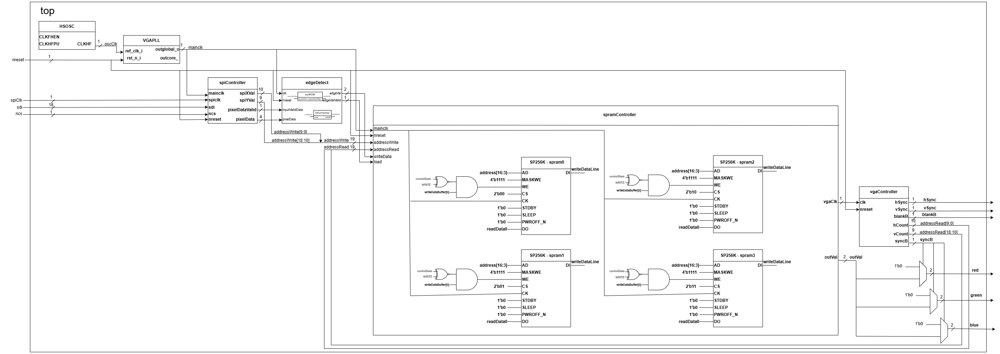
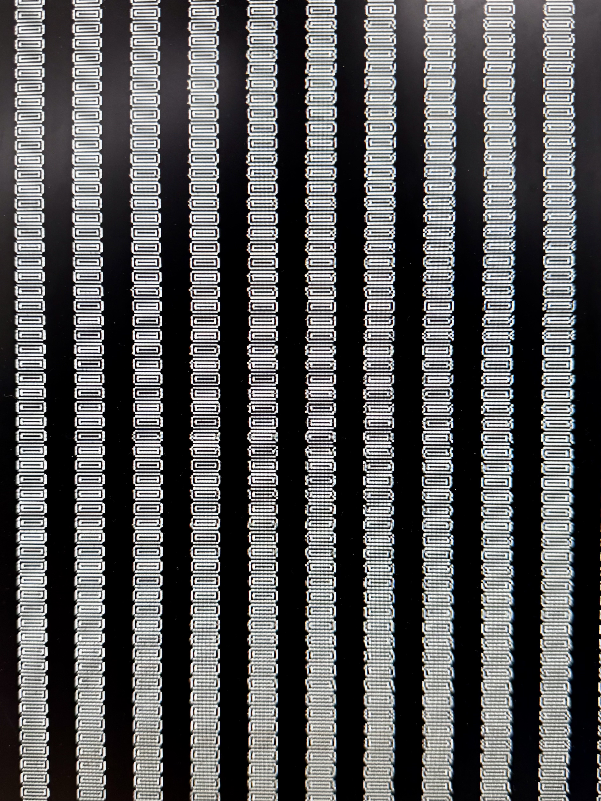

graph TD
A((VGA Read)) --> B((Load Line))
B --> C((VGA Read))
C --> D((Write to RAM))
D --> A
FPGA Design
Background
FPGA (Field Programmable Gate Array) is a type of integrated circuit that can be programmed after manufacturing. It is a reconfigurable device that can be used to implement digital logic circuits. FPGAs are used in a wide range of applications, including digital signal processing, networking, and embedded systems.
One of the big advantages of FPGAs is that they can be reprogrammed to implement different functions. This makes them very flexible and allows designers to quickly prototype and test new designs. FPGAs are also very fast and can be used to implement high-performance digital systems.
Sobel Edge Detection
The Sobel edge detection algorithm is a popular image processing technique that is used to detect edges in images. It works by convolving the image with a pair of 3x3 convolution kernels to calculate the gradient of the image intensity at each pixel. The magnitude of the gradient is then used to determine if the pixel is part of an edge.
The kernel is weighed and can be seen below:
-1 0 1
-2 0 2
-1 0 1VGA Display
VGA (Video Graphics Array) is a standard for displaying video on a computer monitor. It uses an analog signal to transmit the video data to the monitor. VGA displays are commonly used in embedded systems and other applications where a high-quality display is required.
Implementation
The FPGA effectively had three overarching tasks: 1. Receive image data from the MCU 2. Process the image data using the Sobel edge detection algorithm 3. Output the processed image data to a VGA monitor
To aid in this, the values from the Sobel kernel were stored in a RAM, and the image data was stored in registers. The FPGA then processed the image data using the Sobel algorithm and outputted the processed image data to the VGA monitor.
Overall Architecture
To gain an overarching idea of the FPGA design, Figure 1 below shows the main components of the FPGA design:

Sobel Edge Detection Algorithm
The edge detection algorithm was implemented using a 5-stage pipeline. The pipeline was designed to process one pixel per clock cycle, allowing for high throughput and efficient computation. The pipeline stages were as follows:
- Sum of Rows and Columns: The input pixel values were multiplied by the Sobel kernel values and summed to calculate the gradient in the x and y directions.
- Gradient Magnitude: The gradient values in the x and y directions were calculated from the sum of rows and columns.
- Squaring and Summing: The gradient values were squared and summed to calculate the magnitude of the gradient.
- Square Root: The square root of the gradient magnitude was calculated to determine if the pixel was part of an edge.
- Bit Compression: The gradient magnitude was compressed to 2 bits to reduce the amount of data that needed to be transmitted to the VGA monitor and stored in memory.
The first three steps were relatively straightforward, with basic arithmetic using adders and multipliers. The square root calculation was more complex and required a lookup table to approximate the square root function. To that end, a Python script was created to generate the square roots for all values from 0 - 7200. The maximum value was calculated by inputting theoretical maximum gradient values into the Sobel kernel. This lookup table was then stored in the BRAM on the FPGA for quick near-instantaneous access.
Further, the Bit Compression step was implemented to reduce the amount of data that needed to be transmitted to the VGA monitor and stored in memory. The output of the square root BRAM was compressed to 2 bits using a simple thresholding function:
\(\text{Output} = \begin{cases} 00 & \text{Input} \leq 21 \\ 01 & 21 < \text{Input} \leq 42 \\ 10 & 42 < \text{Input} \leq 63 \\ 11 & \text{Input} > 63 \end{cases}\)
These threshold values were determined as the maximum output of the square root function was 84. So, despite being stored in a 6-bit register with a theoretical maximum of 127, these values maximize the dynamic range of the output.
By putting registers in between each stage of the pipeline, the FPGA was able to process one pixel per clock cycle, allowing for high throughput and efficient computation. Although with the time delay of receiving new image data from the MCU over SPI this would be slowed down, registers are also added to store the current x and y pixel values to ensure that the correct pixel is processed and stored in the SPRAM.
VGA Output Module
The VGA output module was responsible for displaying the processed image data on a VGA monitor. The module was designed to output a 640x480 image with a resolution of 800x600 pixels. The module used a single-port RAM to store the processed image data and a VGA controller to generate the VGA signal.
The VGA controller generated the horizontal and vertical sync signals and the pixel clock signal required by the VGA monitor. The controller also generated the pixel address for the RAM based on the current horizontal and vertical sync signals. The processed image data was read from the RAM and outputted to the VGA monitor.
The VGA output module was implemented using a state machine that controlled the timing of the VGA signals and the reading of the processed image data from the RAM.
SPRAM Logic
Although reading/writing from a SPRAM seems straightforward, the logic to enable this functionality actually ended up being non-trivial. This is primarily due to the strict timing constraints of the VGA output module. The VGA output module requires a pixel to be output every 40ns, which is the time it takes for the VGA monitor to display a pixel. This meant that the clock going into the SPRAM had to be twice as fast, at 50MHz. Further, the SPRAM had a write mask input that allows the user to write to specific 4-bit fields in the SPRAM. However, since we decided to store 2 bits per pixel (4 bits would’ve resulted in not enough SPRAM), we had to write to the SPRAM in 2 cycles. This resulted in a 4-state FSM that looked like this:
There was also a buffer system implemented to account for the fact that there are no guarantees that the SPI clock would divide the FPGA’s clock evenly. This buffer system would store the pixel data in a buffer any time an input is detected, and it would be processed and stored in the RAM in the next possible FSM cycle.
SPI Communication
The SPI IP provided by Lattice was not ideal for our purposes, and as a result, we designed our own SPI module as well. Taking in a clock, and a single data line, the SPI module would read in data from the MCU and store it in registers. These registers would then be processed by the Sobel edge detection algorithm, and stored in the SPRAM.
Result
Although the MCU didn’t quite work out, we were able to load the FPGA with a rectangle that was processed by the Sobel edge detection algorithm. The VGA output was stable and the edge detection performed well. The SPRAM logic was also implemented to store the processed image data and enable reading and writing from the RAM.
We loaded it with the outline of a rectangle, and applying the Sobel filter to this should result in two rectangles, one on the outside to show the gradient from the background to the rectangle, and one on the inside to show the gradient from the rectangle to the blank inside the rectangle. This can be seen in the image below: 
Conclusion
The FPGA implementation of the edge detection algorithm was successful in processing the image data and outputting the processed image data to a VGA monitor. The pipeline architecture allowed for high throughput and efficient computation, and the VGA output module generated the VGA signals required by the monitor. The SPRAM logic was also implemented to store the processed image data and enable reading and writing from the RAM.
Overall, the design does a good job of maintaining performance and delineating the tasks of the FPGA. The output to the monitor was stable and the edge detection performed well!